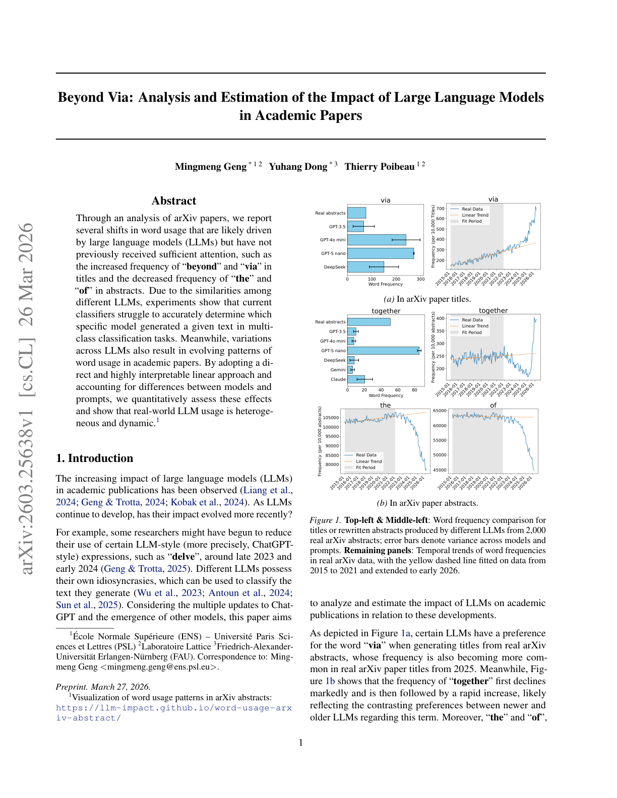

저자: Mingmeng Geng, Yuhang Dong, Thierry Poibeau | 날짜: 2026-03-26 | Journal: arXiv preprint | DOI: N/A | arXiv: 2603.25638

Figure 1
학술 논문에서 LLM의 영향은 어떻게 측정할 수 있으며 실제로 어느 정도인가? arXiv 논문 분석을 통해 LLM이 구동하는 단어 사용 패턴 변화를 포착했다. 제목에서는 "beyond"와 "via"의 빈도가 증가하고, 초록에서는 "the"와 "of"의 빈도가 감소한다. 현재 분류기들은 어떤 특정 모델이 텍스트를 생성했는지 멀티클래스 분류에서 정확히 판별하기 어렵다 — LLM들이 서로 비슷하기 때문이다. 해석 가능한 선형 접근법을 채택하고 모델·프롬프트 차이를 보정하여, 실세계 LLM 사용이 이질적이고 동적임을 정량적으로 보였다.
Figure 1
Figure 1: arXiv 논문 제목/초록에서 특정 단어 빈도의 시계열 변화 — LLM 출시 전후 비교
| 항목 | 점수 |
|---|---|
| Novelty | 3/5 |
| Technical Soundness | 3/5 |
| Significance | 3/5 |
| Clarity | 4/5 |
| Overall | 3/5 |
총평: LLM 영향의 어휘 지표를 간결하고 해석 가능하게 제시한 탐색적 연구이나, 인과 관계 확립과 특정 LLM 귀속의 어려움은 향후 해결해야 할 핵심 과제다.